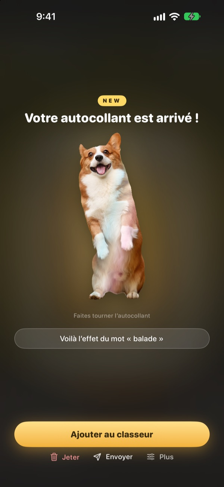
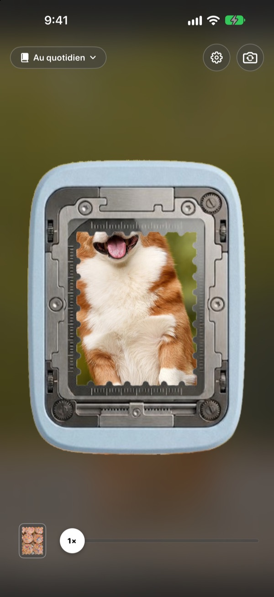
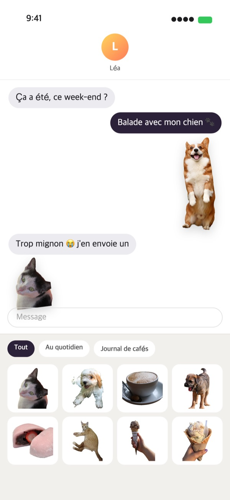
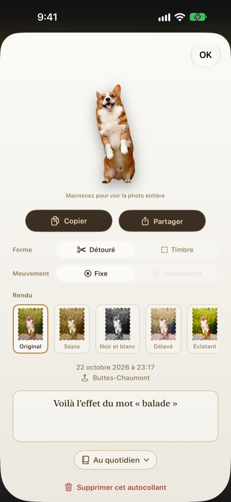
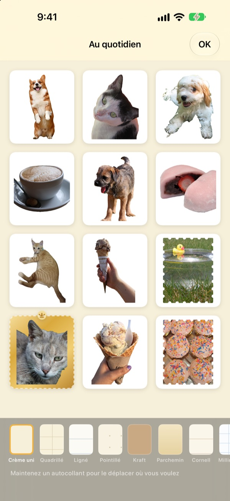

Maintenez appuyé,
l’instant devient autocollant
Cadrez la scène dans la fenêtre de la perforatrice, appuyez longuement puis relâchez. Votre chien est détouré selon sa silhouette, avec le petit mouvement d’avant et d’après l’appui. Envoyez-le aussitôt depuis Messages ou le clavier.
Toutes les fonctionnalités sont gratuites. Vos autocollants et photos restent sur votre appareil.

Essayez par vous-même
Choisissez une scène, maintenez le bouton de la perforatrice puis relâchez. Ensuite, essayez une autre forme et un autre rendu.
Les moments adorables dorment dans la photothèque
Vous saisissez votre chien la langue pendante. Pour en faire un autocollant, il faut retrouver la photo, la détourer, puis ouvrir encore une app d’autocollants. Entre-temps, la conversation est passée à autre chose. Punching détache l’autocollant là où vous prenez la photo, et dès que vous le rangez, il est dans le tiroir d’autocollants de Messages.
Le sujet détouré, le paysage en timbre
S’il y a un sujet à détourer, comme une personne, un animal ou un objet, seul ce sujet est découpé. Sans sujet, comme pour un paysage, l’image se détache en timbre aux bords dentelés.
Le court mouvement d’avant et d’après l’appui est conservé : l’autocollant bouge.

Directement dans Messages et le clavier
Les autocollants détachés apparaissent dans le tiroir d’autocollants de Messages. Activez le clavier Punching pour les choisir et les coller aussi dans d’autres apps.
Les autocollants animés arrivent en mouvement. Maintenez le doigt sur un autocollant pour le copier, puis collez-le où vous voulez.

Forme et rendu, même après coup
Passez à tout moment du détouré au timbre, du mouvement à l’image fixe. La photo d’origine est conservée, l’autocollant reste donc aussi net qu’au premier jour, quel que soit le nombre de changements.
Choisissez un rendu parmi Original, Sépia, Noir et blanc, Délavé, Éclatant et Cyan, et ajoutez quelques mots, la date et le lieu.

Des classeurs pour ranger, du papier pour imprimer
Créez un classeur par thème : dans Messages et sur le clavier aussi, vous choisissez classeur par classeur. Prenez des pages kraft, quadrillées, lignées ou parchemin, et disposez les autocollants dans l’ordre qui vous plaît.
Transformez un classeur en PDF à imprimer avec des traits de découpe en forme de timbre, et imprimez-le directement sur du papier autocollant.

Trois étapes pour commencer
- 1
Cadrez
Placez ce que vous voulez garder dans la fenêtre au centre de l’appareil photo.
- 2
Appuyez, relâchez
L’autocollant se détache au moment où vous relâchez.
- 3
Rangez et envoyez
Ajoutez-le à un classeur : il est aussitôt disponible dans Messages et le clavier.
Où l’utiliser, où le régler
- Messages
- ＋ à côté du champ de saisie ▸ Autocollants ▸ Punching Autocollants
- Autres apps
- Activez le clavier Punching, passez-y avec la touche globe, puis choisissez et collez
- Partout
- Maintenez un autocollant pour le copier, puis collez-le
- Autocollants papier
- ⋯ dans un classeur ▸ Utilisation ▸ Planche d’autocollants à imprimer (PDF)
- Pages et ordre
- ⋯ dans un classeur ▸ Décorer librement
- Anciennes photos
- Importer depuis Photos, dans un classeur
- Forme au détachage
- Réglages ▸ Détachage ▸ Forme par défaut
- Voir le mouvement
- Réglages ▸ Affichage ▸ Lecture auto du mouvement
- Accès rapide
- Ouvrir l’appareil photo Punching, depuis Raccourcis ou le Centre de contrôle
Les réglages se trouvent sous la roue dentée, en haut à droite de l’appareil photo.
Questions fréquentes
Mon autocollant ne bouge pas.
En haut à droite de l’appareil photo, ouvrez Réglages ▸ Affichage et vérifiez que Lecture auto du mouvement est activé. Touchez ensuite l’autocollant et vérifiez que Mouvement est activé sous Forme. Le mouvement est toujours enregistré, vous pouvez donc l’activer à tout moment. Les photos importées depuis l’app Photos ne comptent qu’une seule image : elles ne bougent pas.
J’obtiens un timbre au lieu d’un sujet détouré.
Les scènes sans sujet à détourer, comme un paysage, se détachent automatiquement en timbre. Touchez l’autocollant pour en changer sous Forme quand vous voulez. Pour obtenir un timbre dès le départ, modifiez Réglages ▸ Détachage ▸ Forme par défaut.
Je ne vois pas mes autocollants dans Messages.
Dans Messages, touchez le bouton ＋ à côté du champ de saisie ▸ Autocollants, puis cherchez Punching Autocollants. Ils apparaissent dès que vous avez détaché au moins un autocollant dans Punching, et si vous avez plusieurs classeurs, vous pouvez les parcourir classeur par classeur. La marche à suivre se trouve dans Réglages ▸ Utilisation ▸ Utiliser dans Messages et le clavier.
Comment activer le clavier ?
Dans Réglages ▸ Utilisation ▸ Utiliser dans Messages et le clavier, touchez Ouvrir les réglages, puis activez Claviers ▸ Punching Autocollants. Pour coller des autocollants, il faut « Autoriser l’accès complet », mais le clavier ne lit ni n’envoie jamais ce que vous tapez et ne se connecte jamais à Internet. Ensuite, dans n’importe quelle app, touchez la touche globe pour passer à Punching Autocollants.
Puis-je imprimer de vrais autocollants ?
Touchez ⋯ en haut à droite d’un classeur ▸ Utilisation ▸ Planche d’autocollants à imprimer (PDF). Vous obtenez un PDF 300 dpi de tout le classeur avec des traits de découpe en forme de timbre, prêt pour du papier autocollant sur une imprimante de maison ou chez un imprimeur. Le Guide d’impression, dans le même menu, détaille chaque étape.
Où sont passées mes anciennes collections ?
Depuis la version 1.0.1, les autocollants se regroupent d’une seule façon : en classeurs. Chaque collection est devenue un classeur du même nom, avec ses autocollants, ses pages et leur ordre, tels quels.
Un voyant vert s’affiche dans la barre d’état.
C’est le voyant d’utilisation de l’appareil photo d’iOS. Il ne s’allume que lorsque l’écran de l’appareil photo est affiché. Quand vous ouvrez un classeur, l’appareil photo s’arrête et le voyant s’éteint.
Que se passe-t-il si je supprime un autocollant ?
L’autocollant, sa photo d’origine et ses données de mouvement sont définitivement supprimés de l’appareil, et il disparaît aussi du tiroir d’autocollants de Messages. Impossible de le récupérer : supprimez avec prudence.
Où sont stockés mes photos et autocollants ?
Uniquement sur votre appareil. Pas de compte, pas de serveur maison, pas de publicité. Seuls quittent l’appareil des statistiques d’utilisation anonymes, des rapports d’erreur et les retours que vous choisissez d’envoyer. Tous les détails figurent dans la politique de confidentialité.
C’est vraiment gratuit ?
Oui, toutes les fonctionnalités sont gratuites. Si l’app vous plaît, vous pouvez laisser un pourboire au développeur depuis l’app, mais un pourboire ne débloque rien.
Une question ou une remarque ? Écrivez à leeo@kakao.com. Nous répondons généralement sous 2 à 3 jours. Pour signaler un bug ou proposer une fonctionnalité, vous pouvez aussi passer par GitHub (M1zz/StampCamera).